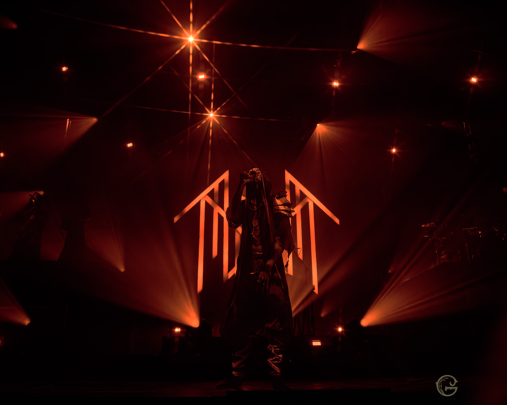

Sleep Token are an English rock band formed in London in 2016. Its members remain anonymous by wearing masks. After self-releasing their debut EP One in 2016, the band signed with Basick Records and issued a follow-up EP, Two, the next year. The group signed with Spinefarm Records and released their first full-length album Sundowning in 2019, which was followed in 2021 by This Place Will Become Your Tomb. A third album, Take Me Back to Eden, was released in May 2023. Their fourth album, Even in Arcadia, was released in May 2025, through RCA Records.
Vessel's approach to music is influenced by a diverse range of artists and genres, blending elements from Bon Iver, Deftones, and Meshuggah into his work. His lyrics often weave in spiritual and mythological themes, particularly focusing on a deity named “Sleep.” This rich tapestry of personal and artistic influences creates the unique sound that defines Sleep Token, drawing fans into their mystical and emotive world.
Before stepping into the spotlight as Vessel, Leo George Faulkner had already immersed himself in the music scene. He explored his artistry through a solo project named Dusk and collaborated in a band called Blacklit Canopy alongside Gemma Matthews. His identity as Vessel was subtly hinted at in his lyrics and further confirmed by registrations with the American Society of Composers, Authors, and Publishers (ASCAP). The ASCAP Repertory lists contributions from both Leo and Adam Pedder, solidifying their roles in shaping Sleep Token's unique sound.
Vessel in Berlin at rock im park
@eri.bulletproof 2 maanden geleden Dear Vessel, your chords will never be boring.
@sandcake 2 maanden geleden The stage, the lighting... it all looks better than a Netflix Show.
@sarainarcadia 2 maanden geleden “Can't always be killin the game” kills the game
@hb9152 2 maanden geleden You DID kill the game, Vessel. 🙌🏻
Sleep Token at Mission Ballroom, Denver, CO, USA
Tour: North American Rituals
September 25, 2023